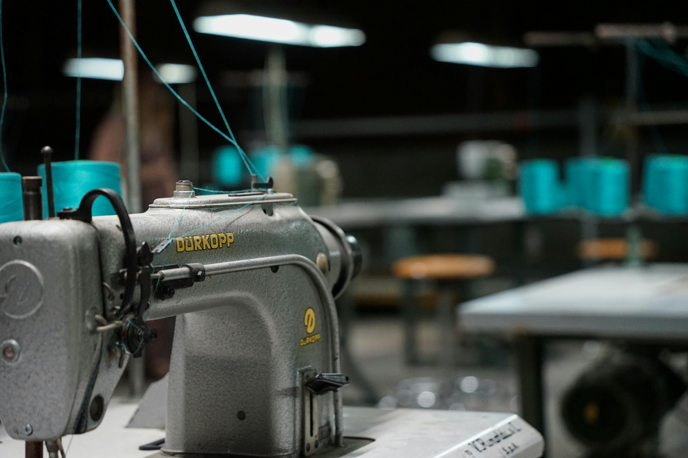

Controla inventario, órdenes y producción en tiempo real para tu satélite textil. Decisiones más rápidas, menos errores, más rendimiento.

Desde la entrada de materiales hasta la entrega final — cada proceso digitalizado y visible en tiempo real.
Distribuye órdenes de producción entre operarios con un clic. Seguimiento en tiempo real del avance de cada tarea.
Registra entradas y salidas de materiales. Alertas automáticas de stock bajo. Trazabilidad completa.
Visualiza KPIs clave, eficiencia por turno, rendimiento de máquinas y cuellos de botella de forma clara.
El operario reporta cualquier falla o problema. El admin la atiende de inmediato con historial completo.
Monitoreo del estado de cada equipo: activo, en mantenimiento o inactivo. Historial de fallas y mantenimientos.
Roles diferenciados: Administrador con control total, Operario con vista simplificada. Seguridad de datos garantizada.
Una interfaz clara para que admins y operarios vean exactamente lo que necesitan, sin ruido visual.
Buen día, Administrador 👋
Hoy tienes 8 órdenes activas · 2 incidencias pendientes
Producción por hora
Tareas pendientes
Registra máquinas, operarios y materiales. Crea órdenes de producción y las asigna al equipo.
Cada operario ve sus tareas asignadas, reporta avances e incidencias directamente desde su estación.
Producción, materiales, incidencias y rendimiento quedan guardados para consulta y análisis inmediato.
Sin configuraciones complejas. Sin papel. Sin caos. Solo producción organizada y visible.